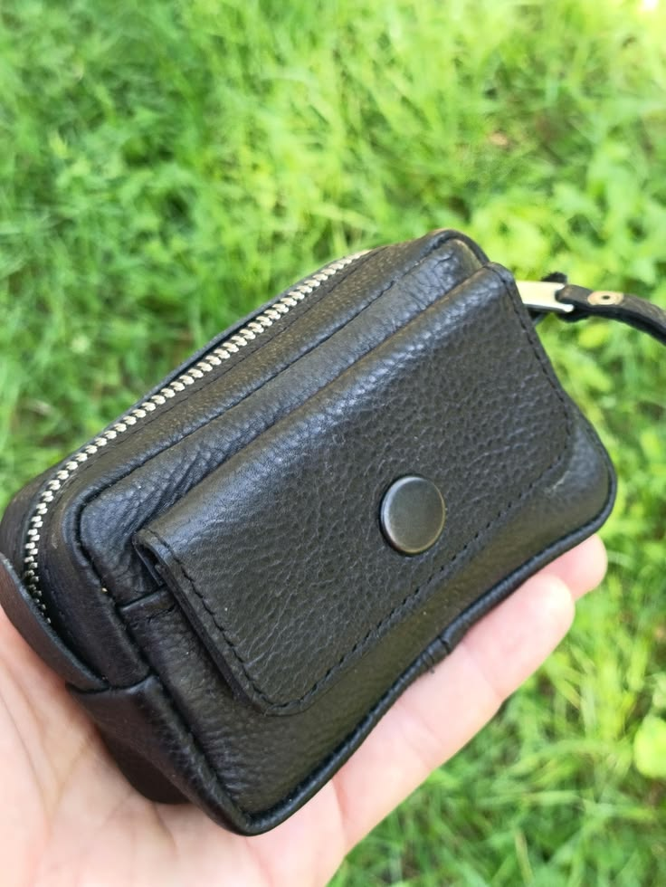

Leather Belt Pouch Wallet, Leather Belt Bag, EDC Belt Pocket Organizer with YKK Zipper, Handmade Card and Key Holder, Gift for him
A handmade leather belt pouch designed to organize coins, cards and small everyday essentials in a compact EDC accessory.
Price: $55 USD
Buy on EtsyHandmade Leather EDC
Keep everyday essentials close at hand with this handmade leather belt pouch. Designed for comfortable, hands-free carry, it slides onto a standard belt and keeps a compact profile at your hip.
The pouch has a practical two-compartment layout: use the front snap-closure pocket for frequently used cards, while the main compartment with a premium YKK zipper stores cash, coins, keys and other small EDC essentials. Made from soft, textured black leather, it combines convenient organization with durable handmade construction and visible stitching details.
Measuring 3.14 inches (80 mm) high × 4.72 inches (120 mm) wide × 1.57 inches (40 mm) deep, it fits standard belts up to 1.96 inches wide (up to 5 cm). It is suitable for daily errands, travel and streamlined everyday carry, and arrives in a premium canvas dust bag for gifting or storage.
Product Details
- Material: Premium soft textured black leather.
- Dimensions: 3.14 inches (80 mm) high × 4.72 inches (120 mm) wide × 1.57 inches (40 mm) deep.
- Belt compatibility: Fits standard belts up to 1.96 inches wide (up to 5 cm).
- Storage: Front card pocket with snap closure and a main zippered compartment for cash, coins, keys or other small essentials.
- Hardware: Premium YKK zipper.
- Construction: Handmade with an embossed Alex Polak logo on the back.
- Packaging: Includes a premium canvas dust bag.
Get This Handmade Leather Product
This handmade leather product is available through the LeatherBagsKingdom Etsy shop.
Buy on Etsy